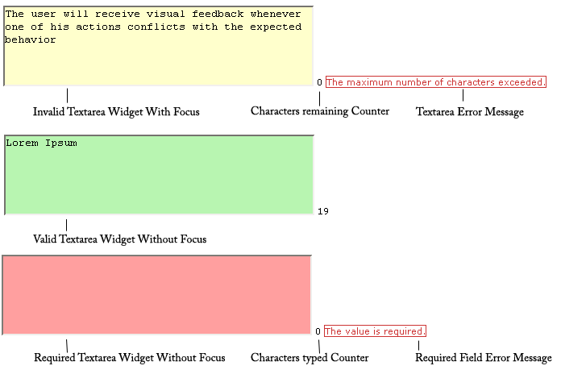

A Spry Validation Text Area widget is a text area that displays valid or invalid states when the user enters a few sentences of text. If the text area is a required field and the user fails to enter any text, the widget returns a message stating that a value is required.
A version of this file is available on Adobe LiveDocs. Please check it for comments and updates.
The following example shows a Validation Text Area widget in various states.

The Validation Text Area widget includes a number of states (for example, valid, invalid, required value, and so on). You can alter the properties of these states using the Property inspector, depending on the desired validation results. A Validation Text Area widget can validate at various points—for example, when the user clicks outside the widget, as the user types, or when the user tries to submit the form.
Whenever a Validation Text Area widget enters one of these states through user interaction, the Spry framework logic applies a specific CSS class to the HTML container for the widget at run time. For example, if a user tries to submit a form, but did not enter text in the text area, Spry applies a class to the widget that causes it to display the error message, “A value is required.” The rules that control the style and display states of error messages exist in the SpryValidationTextarea.css file that accompanies the widget.
The default HTML code for the Validation Text Area widget, usually inside a form, is made up of a container span tag that surrounds the textarea tag of the text area. The HTML code for the Validation Text Area widget also includes script tags in the head of the document and after the widget’s HTML code.
The HTML code for the Validation Text Area widget also includes script tags in the head of the document and after the widget’s HTML code. The script tag in the head of the document defines all of the JavaScript functions related to the Text Area widget. The script tag after the widget code creates a JavaScript object that makes the text area interactive.
Following is the HTML code for a Validation Text Area widget:
<head>
...
<!-- Link the Spry Validation Text Area JavaScript library -->
<script src="SpryAssets/SpryValidationTextarea.js" type="text/javascript"></script>
<!-- Link the CSS style sheet that styles the widget -->
<link href="SpryAssets/SpryValidationTextarea.css" rel="stylesheet" type="text/css" />
</head>
<body>
<form id="form1" name="form1" method="post" action="">
<!-- Create the text area widget and assign a unique id-->
<span id="sprytextarea1">
<textarea name="textarea1" id="textarea1" cols="45" rows="5"></textarea>
<!--Display an error message-->
<span class="textareaRequiredMsg">A value is required.</span>
</span>
</form>
<!-- Initialize the Validation Text Area widget object-->
<script type="text/javascript">
var sprytextarea1 = new Spry.Widget.ValidationTextarea("sprytextarea1");
</script>
</body>
In the code, the new JavaScript operator initializes the Text Area widget object, and transforms the span content with the ID of sprytextarea1 from static HTML code into an interactive page element.
The span tag for the error message in the widget has a CSS class applied to it. This class (which is set to display:none; by default), controls the style and visibility of the error message, and exists in the accompanying SpryValidationTextarea.css file. When the widget enters different states as a result of user interaction, Spry places different classes on the container for the widget, which in turn affects the error-message class.
You can add other error messages to a Validation Text Area widget by creating a span tag (or any other type of tag) to hold the text of the error message. Then, by applying a CSS class to it, you can hide or show the message, depending on the widget state.
You can change the default appearance of the Validation Text Area widget's states by editing the corresponding CSS rule in the SpryValidationTextarea.css file. For example, to change the background color for a state, edit the corresponding rule or add a new rule (if it’s not already present) in the style sheet.
In the preceding example, span tags create the structure for the widget:
Container SPAN TEXTAREA tag Error message SPAN
You can, however, use almost any container tag to create the widget:
Container DIV TEXTAREA tag Error Message P
Spry uses the tag ID (not the tag itself) to create the widget. Spry also displays error messages using CSS code that is indifferent to the actual tag used to contain the error message.
The ID passed into the widget constructor identifies a specific HTML element. The constructor finds this element and looks inside the identified container for a corresponding textarea tag. If the ID passed to the constructor is the ID of the textarea tag (rather than a container tag), the constructor attaches validation triggers directly to the textarea tag. If there is no container tag, however, the widget cannot display error messages, and different validation states will only alter the appearance of the textarea tag element (for example, its background color).
Note: Multiple textarea tags do not work inside the same HTML widget container. Each text field should be its own widget.
The SpryValidationTextarea.css file contains the rules that style the Validation Text Area widget and its error messages. You can edit these rules to style the look and feel of the widget and error messages. The names of the rules in the CSS file correspond to the names of the classes specified in the widget’s HTML code.
The following is the CSS code for the SpryValidationTextarea.css file:
/*Validation Textarea styling classes*/
.textareaRequiredMsg, .textareaMinCharsMsg, .textareaMaxCharsMsg, .textareaValidMsg {
display:none;
}
.textareaRequiredState .textareaRequiredMsg,
.textareaMinCharsState .textareaMinCharsMsg,
.textareaMaxCharsState .textareaMaxCharsMsg{
display: inline;
color: #CC3333;
border: 1px solid #CC3333;
}
.textareaValidState textarea, textarea.textareaValidState {
background-color:#B8F5B1;
}
textarea.textareaRequiredState, .textareaRequiredState textarea, textarea.textareaMinCharsState, .textareaMinCharsState textarea, textarea.textareaMaxCharsState, .textareaMaxCharsState textarea {
background-color:#FF9F9F;
}
.textareaFocusState textarea, textarea.textareaFocusState {
background-color:#FFFFCC;
}
.textareaFlashState textarea, textarea.textareaFlashState{
color:red !important;
}
textarea.textareaHintState, .textareaHintState textarea{
}
The SpryValidationTextField.css file also contains extensive comments, explaining the code and the purpose for certain rules. For further information, see the comments in the file.
For example, create a folder called SpryAssets in the root folder of your web site, and upload the SpryValidationTextarea.js file to it. The SpryValidationTextarea.js file contains all of the information necessary for making the Text Area widget interactive.
<script src="SpryAssets/SpryValidationTextarea.js" type="text/javascript"></script>
Make sure that the file path to the SpryValidationTextarea.js file is correct. This path varies depending on where you’ve placed the file in your web site.
<link href="SpryAssets/SpryValidationTextarea.css" rel="stylesheet" type="text/css" />
Make sure that the file path to the SpryValidationTextarea.css file is correct. This path varies depending on where you’ve placed the file in your web site.
<textarea name="mytextarea" id="textarea"></textarea>
<span id="sprytextarea1"> <textarea name="mytextarea"></textarea> </span>
<script type="text/javascript">
var sprytextarea1 = new Spry.Widget.ValidationTextarea("sprytextarea1");
</script>
The new JavaScript operator initializes the Text Area widget object, and transforms the span tag content with the ID of sprytextarea1 from static HTML code into an interactive text field object. The Spry.Widget.ValidationTextarea method is a constructor in the Spry framework that creates text area objects. The information necessary to initialize the object is contained in the JavaScript library, SpryValidationTextarea.js, that you linked to at the beginning of this procedure.
Make sure that the ID of the text area’s container span tag matches the ID parameter you specified in the Spry.Widgets.ValidationTextarea method. Make sure that the JavaScript call comes after the HTML code for the widget.
The complete code looks as follows:
<head>
...
<script src="SpryAssets/SpryValidationTextarea.js" type="text/javascript"></script>
<link href="SpryAssets/SpryValidationTextarea.css" rel="stylesheet" type="text/css" />
</head>
<body>
<form id="form1" name="form1" method="post" action="">
<span id="sprytextarea1">
<textarea name="textarea1" id="textarea1" cols="45" rows="5"></textarea>
</span>
</form>
<script type="text/javascript">
var sprytextarea1 = new Spry.Widget.ValidationTextarea("sprytextarea1");
</script>
</body>
Create a span tag (or any other type of tag) to display the error message, and assign the appropriate class to it, as follows:
<span id="sprytextarea1"> <textarea name="textarea1" id="textarea1" cols="45" rows="5"></textarea> <span class="textareaRequiredMsg">Please enter a description</span> </span>
The .textareaRequiredMsg rule is located in the SpryValidationTextarea.css file, and is set to display:none by default. When the widget enters a different state through user interaction, Spry applies the appropriate class —the state class—to the container of the widget. This action affects the error message class, and by extension, the appearance of the error message.
For example, the following shows a portion of the CSS from the SpryValidationTextarea.css file:
.textareaRequiredMsg,
.textareaMinCharsMsg,
.textareaMaxCharsMsg,
.textareaValidMsg {
display:none;
}
.textareaRequiredState .textareaRequiredMsg,
.textareaMinCharsState .textareaMinCharsMsg,
.textareaMaxCharsState .textareaMaxCharsMsg {
display: inline;
color: #CC3333;
border: 1px solid #CC3333;
}
By default, there is no state class applied to the widget container, so that when the page loads in a browser, the error message text in the preceding HTML code example only has the .textareaRequiredMsg class applied to it. (The property and value pair for this rule is display:none, so the message remains hidden.) If the user fails to enter text in a required text area, however, Spry applies the appropriate class to the widget container, as follows:
<span id="sprytextarea1" class="textareaRequiredState"> <input type="text" name="mytextarea" id="mytextarea" /> <span class="textareaRequiredMsg">Please enter a description</span> </span>
In the CSS in the preceding code, you can see that the state rule with the contextual selector .textareaRequiredState . textareaRequiredMsg overrides the default error-message rule responsible for hiding the error message text. Thus, when Spry applies the state class to the widget container, the state rule determines the appearance of the widget, and displays the error message inline in red with a 1-pixel solid border.
Following is a list of default error-message classes and their descriptions. You can change these classes and rename them to anything you want. If you do so, don’t forget to change them in the contextual selector also.
| Error message class |
Description |
|---|---|
.textareaRequiredMsg |
Causes error message to display when the widget enters the required state |
.textareaMinCharsMsg |
Causes error message to display when the widget enters the minimum number of characters state |
.textareaMaxCharsMsg |
Causes error message to display when the widget enters the maximum number of characters state |
.textareaValidMsg |
Causes error message to display when the widget enters the valid state |
Note: You cannot rename state-related class names because they are hard-coded as part of the Spry framework.
By default, the Validation Text Area widget validates when the user clicks the submit button. You can, however, set two other options: blur or change. The validateOn:["blur"] parameter causes the widget to validate whenever the user clicks outside the text area. The validateOn:["change"] parameter causes the widget to validate as the user changes text inside the text area.
To specify when validation occurs, add a validateOn parameter to the constructor as follows:
<script type="text/javascript">
var sprytextarea1 = new Spry.Widget.ValidationTextarea("sprytextarea1", {validateOn:["blur"]});
</script>
As a convenience, you can discard the brackets if your validateOn parameter contains a single value (for example, validateOn: "blur"). If the parameter contains both values, however (validateOn:["blur", "change"]), include brackets in the syntax.
To specify a minimum or maximum number of characters, add the minChars property or maxChars property (or both) and a value to the constructor, as follows:
<script type="text/javascript">
var textareawidget1 = new Spry.Widget.ValidationTextarea("textareawidget1",{minChars:value, maxChars:value});
</script>
You can add a character counter that lets your users know how many characters they have typed, or how many characters are remaining when entering text in the text area.
<form id="form1" name="form1" method="post" action="">
<span id="sprytextarea1">
<textarea name="textarea1" id="textarea1" cols="45" rows="5"></textarea>
<span id="my_counter_span"></span>
<span class="textareaRequiredMsg">Maximum number of characters exceeded</span>
</span>
</form>
<script type="text/javascript">
var sprytextarea1 = new Spry.Widget.ValidationTextarea("sprytextarea1" {maxChars:100});
</script>
Leave the new tag empty. Spry provides the content of the tag later as the user types in text.
Note: The counter tag must appear within the HTML container tag for the widget.
<form id="form1" name="form1" method="post" action="">
<span id="sprytextarea1">
<textarea name="textarea1" id="textarea1" cols="45" rows="5"></textarea>
<span id="my_counter_span"></span>
<span class="textareaRequiredMsg">Maximum number of characters exceeded</span>
</span>
</form>
<script type="text/javascript">
var sprytextarea1 = new Spry.Widget.ValidationTextarea("sprytextarea1" {maxChars:100, counterType:"chars_remaining"});
</script>
The counterType option defines the type of counter to use and can take two values: "chars_count", or "chars_remaining". The "chars_count" value results in a counter that counts the number of characters typed in the text area. The "chars_remaining" value results in a counter that displays the number of characters remaining before the maximum number of characters is reached. The second option must be used in conjunction with the maxChars option, as in the preceding example.
<form id="form1" name="form1" method="post" action="">
<span id="sprytextarea1">
<textarea name="textarea1" id="textarea1" cols="45" rows="5"></textarea>
<span id="my_counter_span"></span>
<span class="textareaRequiredMsg">Maximum number of characters exceeded</span>
</span>
</form>
<script type="text/javascript">
var sprytextarea1 = new Spry.Widget.ValidationTextarea("sprytextarea1" {maxChars:100, counterType:"chars_remaining", counterId:"my_counter_span"});
</script>
By default, Validation Text Area widgets require user input when published on a web page. You can, however, make the completion of text areas optional for the user.
To change the required status of a text area, add the isRequired property to the constructor and set its value to false, as follows:
<script type="text/javascript">
var textareawidget1 = new Spry.Widget.ValidationTextarea("textareawidget1", {isRequired:false});
</script>
The hint option lets you display a hint that lets your user know what kind of text they should enter (for example, “Enter your address here”). The hint appears in the text area when the user loads the page in a browser and no predefined value exists.
You can change the look of the hint text to be different than any other textarea text value through the CSS class "textareaHintState".
To create a hint for a text area, add the hint property to the constructor and the text of your hint as the value, as follows:
<script type="text/javascript">
var textareawidget1 = new Spry.Widget.ValidationTextarea("textareawidget1", {hint:"Enter your address here"});
</script>
You can prevent your users from entering more than the maximum number of allowed characters in a Validation Text Area widget. For example, if you set the useCharacterMasking option so that a widget can accept no more than 20 characters, the user cannot type more than 20 characters in the text area.
Use this option in conjunction with the maxChars option.
To block extra characters, add the useCharacterMasking property to the constructor and set its value to true, as follows:
<script type="text/javascript">
var textareawidget1 = new Spry.Widget.ValidationTextarea("textareawidget1", maxChars:20, {useCharacterMasking:true});
</script>
The SpryValidationTextarea.css file provides the default styling for the Validation Text Area widget. You can, however, customize the widget by changing the appropriate CSS rule. The CSS rules in the SpryValidationTextarea.css file use the same class names as the related elements in the widget’s HTML code, so it’s easy for you to know which CSS rules correspond to the widget and its error states.
The SpryValidationTextarea.css file should already be included in your website before you start customizing.
The SpryValidationTextarea.css file contains extensive comments, explaining the code and the purpose for certain rules. For further information, see the comments in the file.
By default, error messages for the Validation Text Area widget appear in red with a 1-pixel solid border surrounding the text.
To change the text styling of Validation Text Area widget error messages, use the following table to locate the appropriate CSS rule, and then change the default properties, or add your own text styling properties and values.
| Text to change |
Relevant CSS rule |
Relevant properties to change |
|---|---|---|
Error message text |
.textareaRequiredState .textareaRequiredMsg, .textareaMinCharsState .textareaMinCharsMsg, .textareaMaxCharsState .textareaMaxCharsMsg |
color: #CC3333; border: 1px solid #CC3333; |
To change the background colors of the Validation Text Area widget in various states, use the following table to locate the appropriate CSS rule, and then change the default background color values.
| Background color to change |
Relevant CSS rule |
Relevant property to change |
|---|---|---|
Background color of widget in valid state |
.textareaValidState textarea, textarea.textareaValidState |
background-color: #B8F5B1; |
Background color of widget in invalid state |
textarea.textareaRequiredState, .textareaRequiredState textarea, textarea.textareaMinCharsState, .textareaMinCharsState textarea, textarea.textareaMaxCharsState, .textareaMaxCharsState textarea |
background-color: #FF9F9F; |
Background color of widget in focus |
.textareaFocusState textarea, textarea.textareaFocusState |
background-color: #FFFFCC; |
Background color of widget with hint on |
.textareaHintState textarea, textarea.textareaHintState |
background-color: #FFFFCC; |
While you can replace error message-related class names with class names of your own by changing the rules in the CSS and the class names in the HTML code, you cannot change or replace state-related class names, because the behaviors are hard-coded as part of the Spry framework. You can, however, override the default state-related class name with your own class name by specifying a new value in the third parameter of the widget constructor.
To change widget state-related class names, add one of the overriding options to the third parameter of the widget constructor, and specify your custom class name, as follows:
<script type="text/javascript">
var sprytextarea1 = new Spry.Widget.ValidationTextarea("sprytextarea1", {requiredClass:"required"});
</script>
The following table provides a list of options you can use to override built-in state-related class names.
| Option |
Description |
|---|---|
requiredClass |
Overrides the "textareaRequiredState" built-in value |
validClass |
Overrides the "textareaValidState" built-in value |
focusClass |
Overrides the "textareaFocusState" built-in value |
invalidCharsMinClass |
Overrides the "textareaMinCharsState" built-in value |
invalidCharsMaxClass |
Overrides the "textareaMaxCharsState" built-in value |
textareaFlashClass |
Overrides the "textareaFlashState" built-in value |
hintClass |
Overrides the "textareaHintState" built-in value |
Copyright © 2006. Adobe Systems Incorporated. All rights reserved.